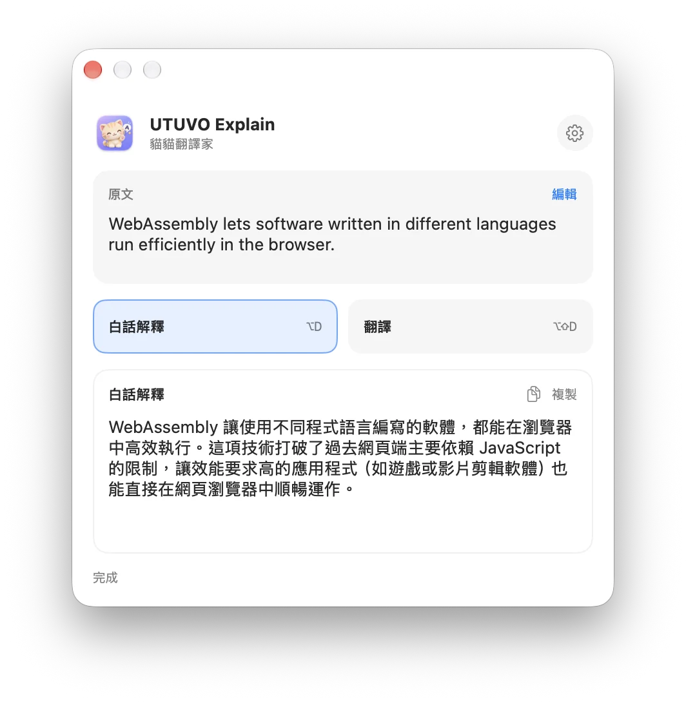
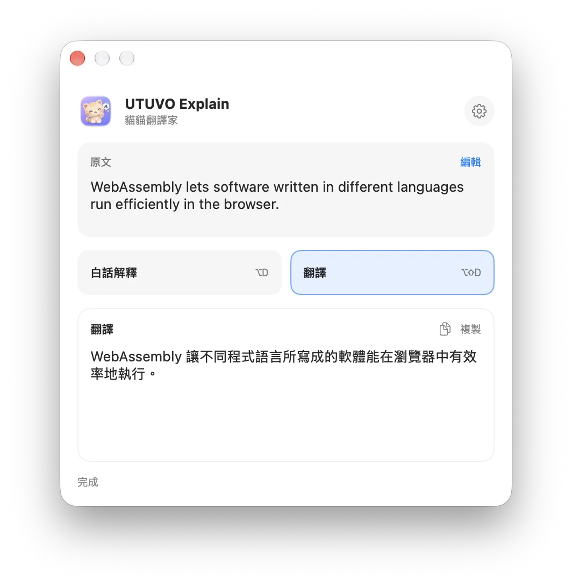
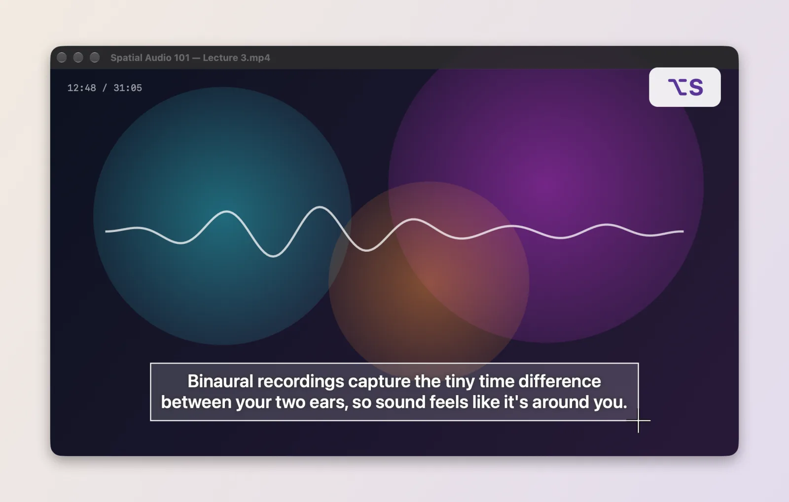
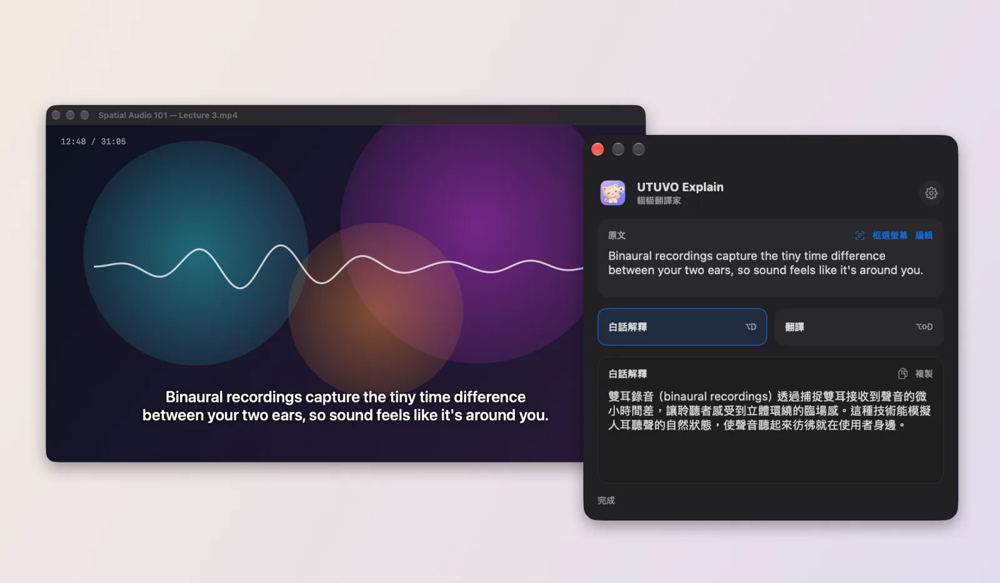
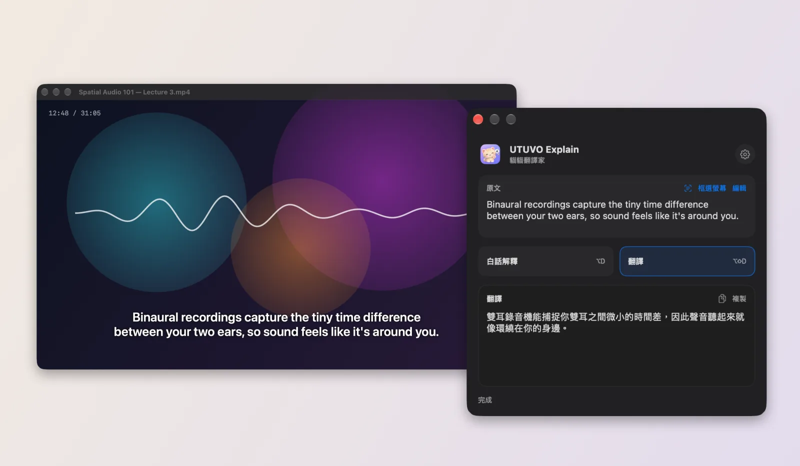
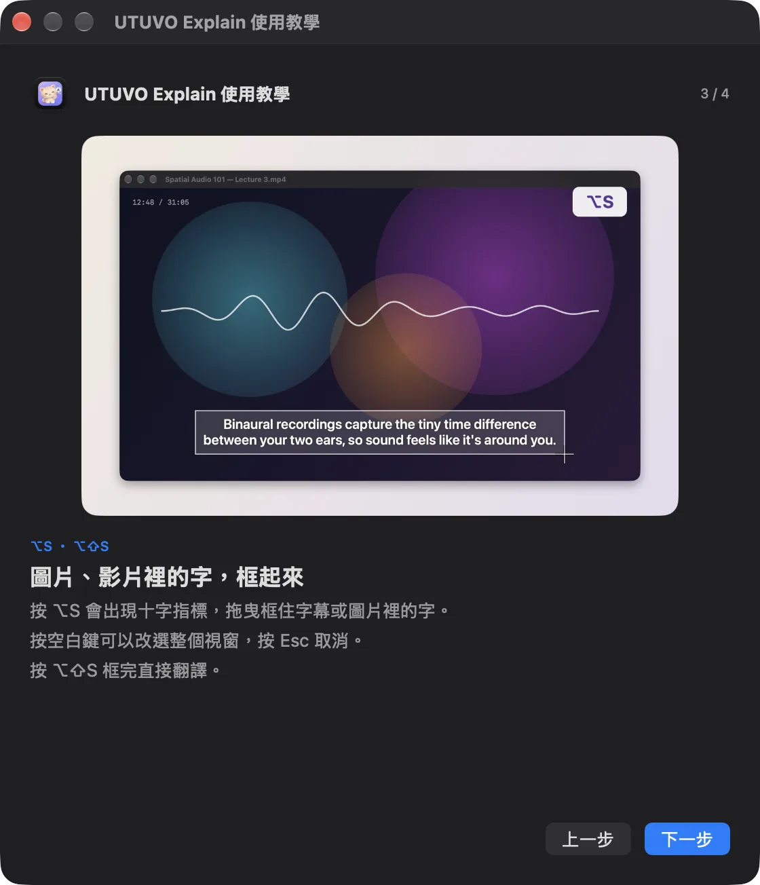

Select a sentence
Highlight text in your browser or another Mac app.
Keep the sentence in view. Explain what it means in plain Traditional Chinese, or translate it directly, in a small window near your selection. Text stuck in a video or image? Press ⌥S and frame it.
v0.2.0 · macOS 14+ · Apple Silicon
Developer ID signed and Apple notarized. Your own Gemini API key and internet connection are required. App UI is in Traditional Chinese.

One shortcut from selection to answer. If another app does not expose its selected text, you can paste into Explain directly.
Highlight text in your browser or another Mac app.
⌥D explains; ⌥⇧D translates. You can also switch modes in the window.
The compact window tries to appear near your selection, so you can continue reading.
The two modes produce different results and the window always labels the current one.
Explains the meaning in Taiwan Traditional Chinese, adding essential context when useful.
Other languages to Taiwan Traditional Chinese; Chinese to English. The result contains only the translation.

Subtitles, screenshots and scanned PDFs don't let you select text. Press ⌥S, drag around the words, and Explain reads them on your Mac, then explains or translates.
A crosshair appears. Drag around the words. Press Space to pick a whole window, or Esc to cancel. Press ⌥⇧S to go straight to a translation.

It shows “recognizing” first, then the explanation. The recognized text sits on top; fix any typo with Edit and send it again.

Flip between Explain and Translate for the same text, and copy the result with one click.

Framing needs macOS “Screen & System Audio Recording”. macOS asks the first time you press ⌥S; turn it on and relaunch. A built-in tutorial is always one click away in the menu bar.

Recognition runs on your Mac and the captured image is deleted right after; only the recognized text is sent to Gemini. The video frame shown is a demo.
Explain does not require a new account. Add your own Gemini API key in Settings. The selected text is sent to Google only when you trigger an explanation or translation. Google controls its free-tier limits and data-use terms.
The app is free and MIT licensed. You need your own Gemini API key. Google's free-tier limits, rate limits and data-use rules can change; see the official pricing page.
The app uses macOS Accessibility to read the current text selection and listen for its global shortcuts. It does not log keystrokes. You can paste text manually if another app does not expose its selection.
No. The framed area is read on your Mac with Apple’s text recognition and deleted right away. Only the recognized text is sent to Gemini, when you ask. Framing needs Screen & System Audio Recording permission and runs only when you press ⌥S.
The current installer targets macOS 14 or newer on Apple Silicon. Source is available to build yourself; Intel Macs have not been verified.
Start with a selection. Keep your place.